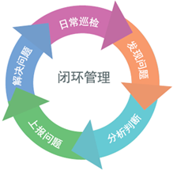

巡修作业应用平台是集GPS卫星定位技术、GIS地理信息技术、GPRS/3G网络通信技术等前沿科技于一身的外勤管理产品。它能够有效满足巡检管理部门，对设施的巡视检查及维修人员的天窗作业、任务监管、实时跟踪、隐患问题汇报，及调度派工等信息化管理方面的需求。使巡检的质量、线路的健康、设施的安全的稳定运行得到持续保证。
本系统采用WebGIS技术、GPS技术、移动应用等技术，有效增强现场巡修工作的实时性、可靠性、可控性，提高了巡修工作的质量，提高巡检部门的作业效率。
支持所有主流的Andorid和IOS系统智能手机，提供和兼容专用终端的数据接入和显示。通用智能手机的易操作、易升级、易维护、显示信息和普及度高等优势，使得用户在不大幅增加成本的前提下可以结合实际应用场景灵活配置更多的人员。支持公网(2G/3G/4G)和专网(企业WiFi)的同时接入，可充分利用现有的网络和通道资源最大限度的节省建设和流量成本。
模块化的设计使用户可根据不同用户群体、不同区段、部门灵活开放不同功能和权限；同时可方便的为用户提供定制化的改进和设计。
产品功能更新便捷，无需对系统复杂操作，集中部署后只需人员在终端按照提示简单操作即可完成。
基于WebGIS的设备分布可视化。可为用户相关管理部门建立一整套设备GIS，实时准确地提供设备的地理信息及用户关注的设备资产信息。
基于WebRTC等技术，实现巡修作业人员同后台以图文、视频语音等方式实时沟通，在线解决问题。
基于WebRTC等技术，实现巡修作业人员同后台以图文、视频语音等方式实时沟通，在线解决问题。
作业任务、即时信息等实时推送。任务完成情况、故障处理情况直观呈现、灵活展现。